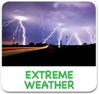
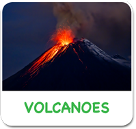
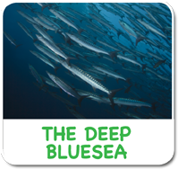
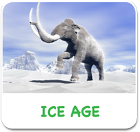
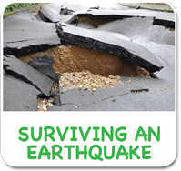
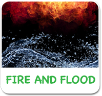

<!-- i-C-a -->
<div data-role="page" id="naturalworld2">
  <div data-role="content" style="overflow:hidden !important;">
    <div id="titleb-holder"><h1 style="margin-top:184px;">The Natural World</h1></div>
    
    <div style="width:90%;margin:auto;">
      <div class="aclink"><a href="#" data-transition="slide" id="agmovielink"></a></div>
      
      <div class="aclink"><a href="#" id="volmovielink" data-transition="slide"></a></div>
      
      <div class="aclink"><a href="#" data-transition="slide"></a></div>
      <div class="aclink"><a href="#" data-transition="slide"></a></div><br>
      <div class="aclink"><a href="#" data-transition="slide"></a></div>
      <div class="aclink"><a href="#" data-transition="slide"></a></div>
      <div class="aclink"><a href="#" data-transition="slide"></a></div>
      <div class="aclink"><a href="#" data-transition="slide"></a></div>
    </div>
    <div class="botlogoholder"><a href="home.html" class="homelinkbh"></a></div>
    
      <div id="pre-bh" style="width:1024px;height:748px;position:absolute;left:0px;top:0px;visibility:hidden;background:#000000;">
        <div class="previdcontainer">
          <video id="volvideo" width="1024" height="722" preload>
            <source src="video/volcanoes_intro.mov" type="video/mp4">
         </video>
       </div>
      </div> <!--/pre-bh -->
    
  </div> <!-- end content -->  
    <script>
      // sound setup is in home.html and index.js
				$(function() {
					$("#naturalworld2").swipe( { swipeRight:goBack, allowPageScroll:"auto"} );
				});
        
      function goBack() {
        $.mobile.changePage("home.html");
        naturalsoundbg.pause(); naturalsoundbg.currentTime = 0;
        mainaudiobg.play();
      }
      
      $('#homelinknaturalworld').on('tap', function() { 
        mainaudiobg.play(); naturalsoundbg.pause(); naturalsoundbg.currentTime = 0;
      });
      
      $('#volmovielink').on('tap', function() { 
        naturalsoundbg.pause(); naturalsoundbg.currentTime = 0;
        //bgsoundvol.play();
        $("#pre-bh").css({"visibility":"visible", "z-index":2});
        volvideo.play();
      });
      
      $("#volvideo").on('tap', function() {
        volvideo.pause();
        volvideo.currentTime = 0;
        bgsoundvol.play();
        $.mobile.changePage("sub-naturalworld-volcanoes.html");
      });
    
			</script>
</div>